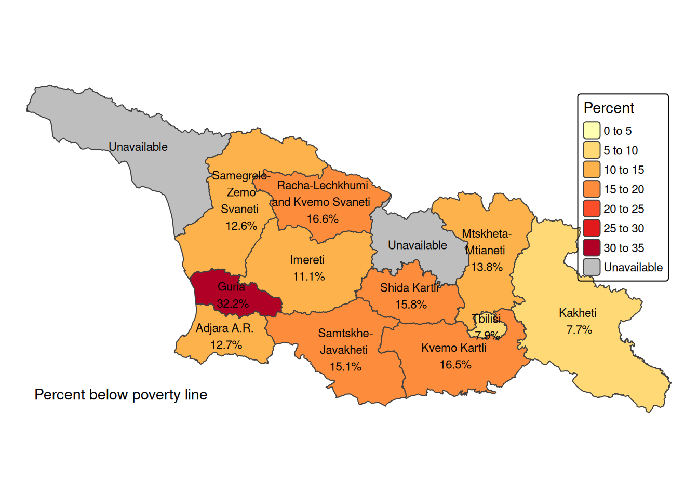

# Clean workspace
rm(list = ls())
# Georgia country ISO code
iso <- "GEO"
# Survey year
survey_year <- 2023
# Exchange rate USD per GEL
er <- 0.37
# Years of interest for our macroeconomic scenario analysis
analysis_years <- c(2030, 2050)Georgia CCDR Microsimulation
1 Introduction
In this calculation file, we “age” the Georgian household survey according to demographic projections and different macroeconomic scenarios to explore the impact of climate-related risks and policy measures on the consumption expenditure distribution. It is part of a larger project with all background contributions to Georgia’s CCDR, available in this repository.
Using RStudio project makes it possible to not use setwd() to establish the root directory and refer to subdirectories in a relative manner, making interoperability easier within teams and not hard coding a particular computer’s file structure into the code. If you are using Positron or Visual Studio Code (and the Quarto extension) just “open folder” at the root of the repository. If you are using R directly, just add setwd(r'(C:\My\path\to\project\root)') at the beginning of your coding session.
1.1 Preamble
We start with a clean environment, making sure that any objects from a previous session are not present. We keep our country ISO code in a variable iso in case we need it later.
We call the appropriate libraries.
Rather than calling our libraries as we go, we will make sure we have everything we need from the beginning.
library(tidyverse) # includes dplyr, ggplot2, purr...
library(haven) # to read SPSS and Stata datasets
library(readxl) # to read from MS-Excel
library(openxlsx) # to write to MS-Excel.
library(gt) # pretty tables
library(car) # companion to applied regression
library(modelr) # regression models
#library(anesrake)
# Raking reweighting but we don't load it, because
# it changes the meaning of summarize from dplyr,
# so we use the form anesrake::anesrake() when using it.
library(janitor) # pretty subtotals
library(broom) # More regressions
library(zoo) # Calculate moving window average and max value
# library(ineq) # Inequality measures
# library(acid)
# Geopackages
library(sf) # to read and write shapefile maps
library(terra) # to perform geocalculations
library(tmap) # for static and interactive maps1.2 Datasets
We then load the datasets that we need for this study. These are based on Georgia’s Integrated Living Conditions Survey 2022 (GEOSTAT, 2023). We make a note that the household identification variable is UID.
## Household Unique ID, Weights, Location and other basic variables
hh_basics <- read_sav(
"data/ilcs_2023/sysschedule.sav") |>
mutate(
UID = as.integer(UID))
# Household size (includes no. of family members)
hh_size <- read_sav(
"data/ilcs_2023/familysize.sav")|>
mutate(
UID = as.integer(UID))
# Processed income at household level
hh_income <- read_sav(
"data/ilcs_2023/tblincomes.sav")|>
mutate(
UID = as.integer(UID))
# Consumption aggregate at household level
hh_expenditure <- read_sav(
"data/ilcs_2023/tblexpenditures.sav")|>
rename(# rename total expenditure variables
total_expenditure = MTlianixarjebi_,
total_expenditure_aeq06 = MTlianimoxmareba_EqAdScale,
total_expenditure_aeq08 = Mtlianimoxmareba_EqAdScale_08) |>
mutate(
UID = as.integer(UID))
# Characteristics of the dwelling
hh_chars <- read_sav(
"data/ilcs_2023/tblshinda01.sav")|>
mutate(
UID = as.integer(UID))
# Persons (pp)
pp <- read_sav(
"data/ilcs_2023/tblshinda02.sav") |>
mutate(
UID = as.integer(UID),
MemberNo = as.integer(MemberNo))
# Labor (pp)
pp_labor <- read_sav(
"data/ilcs_2023/tblshinda05_1.sav") |>
mutate(
UID = as.integer(UID),
MemberNo = as.integer(MemberNo),
Q5 = as.integer(Q5),
Q12 = as.integer(Q12))
# Poverty
poverty <- read_dta(
"data/ilcs_2023/POVERTY_stata.dta") |>
mutate(
UID = as.integer(UID))
# Ind. Poverty
ind_poverty <- read_dta(
"data/ilcs_2023/IND_POVERTY_stata.dta") |>
rename(MemberNo = memberno) |>
mutate(
UID = as.integer(UID),
MemberNo = as.integer(MemberNo))
# Food diary
food_q <- read_sav(
"data/ilcs_2023/tblconsumption.sav") |>
rename(UID = UID)
food_price <- read_sav(
"data/ilcs_2023/tblavgprices.sav")
# Maps
adm1 <- sf::read_sf("data/gis/geo-adm1.shp") |>
dplyr::select(RegNo, region, ADM1_PCODE, ADM1_EN, ADM1_KA, geometry) |>
dplyr::arrange(ADM1_PCODE)
regions <- as.data.frame(adm1) |>
select(-geometry)We also need look-up tables.
sam_activities <- read_excel(
"data/sam/classifications.xlsx",
sheet = "SAM-REV2",
col_names = T,
col_types = c("text", "text", "text","text", "numeric")
)
sam_factors <- read_excel(
"data/sam/classifications.xlsx",
sheet = "SAM factors",
col_names = T,
col_types = "text",
)
coicop <- read_excel(
"data/sam/classifications.xlsx",
sheet = "COICOP",
col_names = T,
col_types = "text",
) |>
mutate(simple_code = as.integer(gsub("\\.", "", Coicop)))
coicop_filtered <- coicop |>
filter( nchar(as.character(simple_code)) >= 5)We also have Continuous Labor Survey data at the individual level, which will come in handy if we do not get access to the labor part of the ILCS. See data folder for documents describing the datasets.
# Labor Force Survey
lfs_2023 <- read_sav(
"data/lfs_2023/LFS_ECSTAT_ENG_2023.sav") |>
rename(UID = UID)
# Labor Force Survey Demographic Characteristics
lfs_2023_dem <- read_sav(
"data/lfs_2023/LFS_Demographic_ENG_2023.sav") |>
rename(UID = UID)We will work non-destructively, meaning we will not rewrite these data sets and we will only create intermediate data frame objects from them to perform transformations, selections and other data management tasks. For example, we will keep household assignment to poverty status and consumption deciles handy by creating a subset of our hh_expenditure data with only our household identifiers, deciles, and poverty if available.
# We will estimate deciles from consumption
deciles <- hh_expenditure |>
select(
# Keep household id and expenditure variables
UID,
total_expenditure,
total_expenditure_aeq06, # Adult equivalent * 0.6
total_expenditure_aeq08) # Adult equivalent * 0.8Our population data comes from UN’s projections.
population_projections <- read_dta("data/population/UN2022_population.dta") |>
filter(country == iso) # we filter for GeorgiaThe macro scenario dataset is an input provided by the Macroeconomic CGE simulation team, with yearly information on GDP, working age population, employment by economic activity (for an aggregation of three sectors: agriculture, manufacturing, and services), wages by economic activity, value added by economic activity, remittances, consumer price index, food price index and energy price index (for a bundle of gas, oil, coal, electricity) by decile (10 representative households in the macro model), and carbon tax revenue transfers to household deciles.
scenario_file <- "data/sam/MacroScenarioInformation_GEO.xlsx"
scenario_varlist <- read_xlsx("data/sam/GEO_Macro_varlist.xlsx") |>
select(-category)
# prices_2030 <-
# read.csv("data/ARM-Microsimulation/prices2030.csv")Economic Activities in the Survey are in Georgian. The following dataset is a lookup table with the English names.
# Equivalence table
sectors <- read_excel(
"data/sam/classifications.xlsx",
sheet = "SAM-REV2",
col_names = T,
col_types = "text",
)We also have an Excel file with changes to labor productivity due to climate variability, by sector. Also, we have livestock productivity changes.
labor_productivity <-
read.csv(
"data/climate_productivity/GEO_labour_REF_shock_admin1_bySector.csv")
livestock_productivity <-
read.csv(
"data/climate_productivity/GEO_livestock_REF_shock_admin1_high_prop_holstein.csv"
)2 Data preparation, demographic characteristics, income outliers and missings
We start with various renames for standardization. Naming conventions in the guidance code use traditional abbreviations like nli for non-lablor income. We are opting for more descriptive variable names like non_labor_income, labor_income, etc. to have more easily readable code. We make an exception for total consumption (tc), because it’s a variable that we use in every scenario and it supersedes lenght limits when adding scenario identifiers.
# Uncomment the correct total expenditure variable below
ex <- hh_expenditure |>
rename(
tc =
total_expenditure
#total_expenditure_aeq06 # Adult equivalent * 0.6
#total_expenditure_aeq08 # Adult equivalent * 0.8
)We extract demographic characteristics for each individual.
2.1 Skill level
For skill level, we will use information on schooling from pp$Education (TblShinda02), which has the following levels:
- Illiterate
- Do not have primary education but can read and write
- Pre-primary education
- Primary education
- Lower secondary education
- Upper secondary education
- Vocational education without secondary general education
- Vocational education on the base of lower secondary education with secondary general education certificate
- Vocational education on the base of secondary general education (except higher professional education)
- Higher professional program
- Bachelor or equivalent
- Master or equivalent
- Doctor or equivalent
We need three skill levels for our SAM template, so we map these levels to:
Low skill (1 - 5): Illiterate through lower secondary. Medium skill (6 - 9): Upper secondary through vocational education. High skill (10 - 13): Higher professional program through Doctor.
pp_factor_descriptors <- pp |>
select(UID, MemberNo, Gender, Age, Education) |>
mutate(
MemberId =
paste0(sprintf("%06d", UID), sprintf("%02d", MemberNo))) |>
mutate(Gender = factor(
Gender,
levels = c(1, 2),
labels = c("Female", "Male")
)) |>
mutate(
SkillLevel = case_when(
Education >= 0 & Education <= 5 ~ 1,
Education > 5 & Education <= 9 ~ 2,
Education > 9 & Education <= 13 ~ 3,
TRUE ~ NA ) ) |>
mutate(
SkillLevel = factor(
SkillLevel,
levels = c( 1, 2, 3),
labels = c( "Low Skill", "Medium Skill", "High Skill"))
)Now that we have skill levels, we need to add information on urban/rural (from hh_basics) and quintile (from ind_poverty), and type of income earner (from pp_labor).
urb_rur <- hh_basics |>
select(UID,QuartNo, UrbanOrRural, RegNo, Weights) |>
mutate(
UrbanOrRural = factor(
UrbanOrRural,
levels = c(2,1),
labels = c("Rural", "Urban")
)
)
quintiles <- poverty |>
select(UID, quintilc, decilc, hhsize) |>
rename(
Quintile = quintilc,
Decile = decilc) |>
mutate(
Quintile = factor(
Quintile,
levels = c(1:5),
labels = c("Q1", "Q2", "Q3", "Q4", "Q5")
),
Decile = factor(
Decile,
levels = c(1:10),
labels = c(
"D01", "D02", "D03", "D04", "D05",
"D06", "D07", "D08", "D09", "D10")
))
is_employed <- ind_poverty |>
mutate(
MemberId =
paste0(sprintf("%06d", UID), sprintf("%02d", MemberNo))) |>
mutate(
employed = case_when(
empl == 1 ~ T,
empl == 0 ~ F,
.default = NA
)
) |>
select(
MemberId, employed
)
pp_lmarket0 <- pp_labor |>
mutate(
MemberId =
paste0(sprintf("%06d", UID), sprintf("%02d", MemberNo))) |>
select(-c(UID,MemberNo))
pp_lmarket1 <- pp_factor_descriptors |>
left_join(urb_rur, join_by(UID)) |>
left_join(quintiles, join_by(UID)) |>
left_join(pp_lmarket0, join_by(MemberId)) |>
relocate(c(UID, MemberNo, MemberId, QuartNo), .before = 1)2.2 Labor status and Economic Activities
We work with labor status from Shinda05_1. Since, upon import NACE 2 codes are converted to numbers, we need to convert them back to text, so that we can keep zeros to the left for proper order. We then extract the first two digits and find the correspondence to Rev. 2 from the SAM using the look-up table sam_activities. For proper order, we convert the SAM activities columns for job 1 and job 2 to factor, using the order from the dataset sam_factors.
pp_microsim01 <- pp_lmarket1 |>
mutate(
MemberId =
paste0(sprintf("%06d", UID), sprintf("%02d", MemberNo))) |>
mutate(
# Job 1 NACE Rev 2 code.
Q5 = if_else(!is.na(Q5),paste0(sprintf("%04d", Q5)), NA),
# Job 2 NACE Rev 2 code.
Q12 = if_else(!is.na(Q12),paste0(sprintf("%04d", Q12)), NA)) |>
mutate(
job1 = if_else(!is.na(Q5),substr(Q5, 1, 2), NA),
job2 = if_else(!is.na(Q12),substr(Q12, 1, 2), NA)
) |>
# Is employed?
left_join(
is_employed,
join_by(MemberId)
) |>
# We match to Rev 2 and SAM classifications (for job 1 and job 2)
left_join(
sam_activities[,c(1,5)],
join_by(job1 == rev2_2d)) |>
left_join(
sam_activities[,c(1,5)],
join_by(job2 == rev2_2d),
suffix =
c("_job1", "_job2")) |>
# And convert to factors for proper order
mutate(
SAM3_job1 = factor(
SAM3_job1,
levels = c(1:3),
labels = c("Agriculture", "Manufactures", "Services")
),
SAM3_job2 = factor(
SAM3_job2,
levels = c(1:3),
labels = c("Agriculture", "Manufactures", "Services")
)
) 2.3 Types of income
Before making our multi-dimensional tables, we need to identify different types of income. f-lab (wages) and f-surp (capital income). The instruction is that f-surp needs to be split into wages to entrepreneurs/self employed and capital income.
pp_microsim02 <- pp_microsim01 |>
mutate(
# We add accross three months for each source (and coalesce the NAs to 0)
labor_income_job1 =
rowSums(
across(starts_with("Q8_faqti_"), \(x) coalesce(x, 0))),
labor_income_job2 =
rowSums(
across(starts_with("Q14_faqti_"), \(x) coalesce(x, 0))),
surplus_income =
rowSums(
across(starts_with("Q10_faqti_"), \(x) coalesce(x, 0)))
) |>
# We also add factor labels to Employment Status
mutate(
lstatus1 = factor(
Q7,
levels = c(1:6),
labels = c(
"Employee", "Employer", "Own Account (Non-Ag.)",
"Own Account (Ag.)", "Unpaid Worker", "Other"))
) |>
mutate(
lstatus2 = factor(
Q13,
levels = c(1:6),
labels = c(
"Employee", "Employer", "Own Account (Non-Ag.)",
"Own Account (Ag.)", "Unpaid Worker", "Other"))
)2.4 Missing and outliers
In this section we will assign a labor income for job1 holders with !lstatus1 %in% c(2,5) & labor_income_job1 == 0 based on predicted income from everyone else who doesn’t meet the condition. We will estimate annual_labor_total after predictions.
Looking at the data we see that only those that report being an employee or “other” report having labor income 1 or 2; Employer and Own Account non-ag report having surplus; and own account ag and (of course) unpaid worker
We first identify who needs predictions for job1, job2, and surplus. We default to NA because we want to preserve the logic of those who don’t have an income, because they aren’t supposed to have one. However, this introduces an uncertainty element when predicting further down the line, because subsetting does not allow NA’s. Even if we want to match just TRUEs. So it’s a double-edged sword. The fix was using which() to find row numbers of those with TRUE.
pp_microsim03 <- pp_microsim02 |>
mutate(
fix_job1 = case_when(
(!is.na(Q7) & Q7 %in% c(2,3,4,5)) ~ F,
(!is.na(Q7) & Q7 %in% c(1,6) & labor_income_job1 > 0) ~ F,
(!is.na(Q7) & Q7 %in% c(1,6) & labor_income_job1 == 0) ~ T,
.default = NA
),
fix_job2 = case_when(
(!is.na(Q13) & Q13 %in% c(2,3,4,5)) ~ F,
(!is.na(Q13) & Q13 %in% c(1,6) & labor_income_job2 > 0) ~ F,
(!is.na(Q13) & Q13 %in% c(1,6) & labor_income_job2 == 0) ~ T,
.default = NA
),
fix_surplus = case_when(
(!is.na(Q7) & Q7 %in% c(1,4,5,6)) ~ F,
(!is.na(Q7) & Q7 %in% c(2,3) & surplus_income > 0) ~ F,
(!is.na(Q7) & Q7 %in% c(2,3) & surplus_income == 0) ~ T,
.default = NA
))Outliers and need to predict.
pp_microsim04 <- pp_microsim03 |>
mutate(
sd_job1 = sd(labor_income_job1, na.rm = T),
sd_job2 = sd(labor_income_job2, na.rm = T),
sd_surplus = sd(surplus_income , na.rm = T),
d_job1 = labor_income_job1 / sd_job1,
d_job2 = labor_income_job2 / sd_job2,
d_job1 = surplus_income / sd_surplus,
)Assign sector to missings.
pp_microsim05 <- pp_microsim04 |>
group_by(UID) |>
mutate(
# Create a temporary variable 'other_sector' as a factor
other_sector_job1 = case_when(
!is.na(Q7) & !is.na(SAM3_job1) & SAM3_job1 %in% levels(SAM3_job1) ~ SAM3_job1,
TRUE ~ NA_character_ # Keep as character NA for now
)
) |>
fill(other_sector_job1, .direction = "downup") |>
mutate(
other_sector_job1 = if_else(is.na(Q7), NA_character_, other_sector_job1)
) |>
mutate(
# Impute missing 'sector' values based on 'other_sector'
SAM3_job1 = as.factor(if_else(
!is.na(Q7),
as.character(coalesce(as.character(SAM3_job1), other_sector_job1)),
as.character(SAM3_job1)
)),
SAM3_job2 = as.factor(if_else(
!is.na(Q13),
as.character(coalesce(as.character(SAM3_job2), other_sector_job1)),
as.character(SAM3_job2)
)),
# Re-establish levels and labels
SAM3_job1 = factor(SAM3_job1, levels = c("Agriculture", "Manufactures", "Services")),
SAM3_job2 = factor(SAM3_job2, levels = c("Agriculture", "Manufactures", "Services"))
) |>
ungroup()2.5 The income simulation regression
Since labor income was a key variable, which we needed to match with the future wage bill by economic activity, we first checked for missing values among employed individuals. We found that almost a third of respondents (28.6%) did not report income for either their primary or secondary job. To overcome this limitation, we used the available information from the remaining respondents to estimate an extended Mincer equation, as shown in Equation 1, and implemented in Listing 1. For the respondents with available information, we also identified outliers as those outside of five standard deviations from the mean labor income.
\[ \begin{equation} \begin{split} \ln(lab_i) = \\ \beta_0 + \beta_1 \text{age}_i + \\ \beta_2 \text{gender}_i + \beta_3 \text{education}_i + \\ \beta_4 \text{age}^2_i + \beta_5 \text{marz}_i + \\ \beta_6 \text{sector}_i + \epsilon_i \end{split} \end{equation} \tag{1}\]
Where:
- \(\ln(lab_i)\) is the natural logarithm of labor income for individual \(i\).
- \(\beta_0\) is the intercept term.
- \(\beta_1, \beta_2, \beta_3, \beta_4, \beta_5, \beta_6\) are the coefficients for the respective independent variables.
- \(\text{age}_i\) is the age of individual \(i\).
- \(\text{gender}_i\) is a binary variable indicating the gender of individual \(i\) (1 for female, 2 for male).
- \(\text{education}_i\) represents the level of education for individual \(i\) (ordered: 1) None to General, 2) Secondary to Vocational, 3) Higher education).
- \(\text{age}^2_i\) is the square of the age of individual \(i\), included to capture non-linear effects of age on labor income.
- \(\text{marz}_i\) represents the region where individual \(i\) resides.
- \(\text{sector}_i\) represents the sector of employment for individual \(i\) (i.e., agriculture, manufacturing or services).
- \(\epsilon_i\) is the error term for individual \(i\).
We first prepare our variables for the regression.
pp_microsim06 <- pp_microsim05 |>
rename(
education = Education,
age = Age,
gender = Gender,
region = RegNo) |>
mutate(
education2 = education^2,
age2 = age^2,
male = case_when(
gender == 1 ~ 1,
gender == 2 ~ 0
),
ln_lab1 = if_else(
!is.na(labor_income_job1) & labor_income_job1 != 0,
log(labor_income_job1),
NA),
ln_lab2 = if_else(
!is.na(labor_income_job2) & labor_income_job2 != 0,
log(labor_income_job2),
NA),
ln_surplus = if_else(
!is.na(surplus_income) & surplus_income != 0,
log(surplus_income),
NA),
sim_job1 = NA_real_,
sim_job2 = NA_real_,
sim_surplus = NA_real_
)|>
# Labor Market Status
mutate(
lmarket = case_when(
!is.na(Q7) ~ as.numeric(SAM3_job1),
is.na(Q7) & age >= 15 ~ 4, # Unemployed
is.na(Q7) & age < 15 ~ 5, # OLF
.default = NA_integer_
)
)Filter the data for regression conditions.
regression_data_job1 <- pp_microsim06 |>
filter(Q7 %in% c(1,6) & fix_job1 == F)
regression_data_job2 <- pp_microsim06 |>
filter(Q13 %in% c(1,6) & fix_job2 == F)
regression_data_surplus <- pp_microsim06 |>
filter(Q7 %in% c(2,3) & fix_surplus == F)Regression model.
model_job1 <- lm(
ln_lab1 ~
age + gender + education +
age2 + region + SAM3_job1,
data = regression_data_job1)
model_job2 <- lm(
ln_lab2 ~
age + gender + education +
age2 + region + SAM3_job2,
data = regression_data_job2)
model_surplus <- lm(
ln_surplus ~
age + gender + education +
age2 + region + SAM3_job1,
data = regression_data_surplus)Applying predictions to those who need it.
Note: The ‘predict’ function in R does not directly support conditions within the function call, so we handle this by filtering or subsetting the data as needed.
Note: ‘type = “response”’ might be needed depending on model type.
# rows to predict (this removes uncertainty NAs for predictions)
target_rows_job1 <- which(pp_microsim06$fix_job1 == TRUE)
target_rows_job2 <- which(pp_microsim06$fix_job2 == TRUE)
target_rows_surplus <- which(pp_microsim06$fix_surplus == TRUE)
# predictions
pp_microsim06$sim_job1[target_rows_job1] <- exp(
predict(
model_job1,
pp_microsim06[target_rows_job1, ],
type = "response")
)
pp_microsim06$sim_job2[target_rows_job2] <- exp(
predict(
model_job1,
pp_microsim06[target_rows_job2, ],
type = "response")
)
pp_microsim06$sim_surplus[target_rows_surplus] <- exp(
predict(
model_job1,
pp_microsim06[target_rows_surplus, ],
type = "response")
)At this point, if there were negative predictions, we would have to make them zero. There are none such cases in this exercise.
And now, we replace simulated income for those who lack one.
pp_microsim07 <- pp_microsim06 |>
mutate(
labor_income_job1 = if_else(
fix_job1 == T,
sim_job1,
labor_income_job1
),
labor_income_job2 = if_else(
fix_job2 == T,
sim_job2,
labor_income_job2
),
surplus_income = if_else(
fix_surplus == T,
sim_surplus,
surplus_income
)
)Finally, we estimate total labor income.
pp_microsim08 <- pp_microsim07 |>
mutate(
# Annual income
annual_labor_income_job1 = labor_income_job1 * 4,
annual_labor_income_job2 = labor_income_job2 * 4,
annual_surplus_income = surplus_income * 4,
# Monthly income
monthly_labor_income_job1 = labor_income_job1 / 3,
monthly_labor_income_job2 = labor_income_job2 / 3,
monthly_surplus_income = surplus_income / 3
) |>
mutate(
# Annual labor income in GEL
annual_labor_total = if_else(
Q7 %in% c(1,2,3,6) | Q13 %in% c(1,2,3,6),
(coalesce(
annual_labor_income_job1, 0) +
coalesce(
annual_labor_income_job2, 0) +
coalesce(
annual_surplus_income, 0)
),
NA_real_
),
# Monthly labor income in GEL
monthly_labor_total = if_else(
Q7 %in% c(1,2,3,6) | Q13 %in% c(1,2,3,6),
(coalesce(
monthly_labor_income_job1, 0) +
coalesce(
monthly_labor_income_job2, 0) +
coalesce(
monthly_surplus_income, 0)
),
NA_real_
))3 UN Population Projections
Now we are ready to move to our demographic projections and macroeconomic model information.
First, filtering based on country (our iso variable).
population_projections <- population_projections |>
filter(country == iso)Collapsing data by summing up variables starting with “yf” and “ym” and reshaping data to long format.
population_projections <- population_projections |>
group_by(Variant, country, cohort) |>
summarize(across(starts_with(c("yf", "ym")), sum)) |>
ungroup()
population_projections <- pivot_longer(population_projections,
cols = starts_with(c("yf", "ym")),
names_to = c(".value", "year"),
names_pattern = "(yf|ym)(.*)")Creating new variable total_population as the sum of yf and ym. Dropping country variables.
population_projections <- population_projections |>
mutate(total_population = yf + ym) |>
select( -country) |>
mutate(year = as.numeric(year))Summarizing the year to find the range.
minyear <- survey_year # Make sure `survey_year` is correctly defined
maxyear <- max(as.numeric(population_projections$year))We have that the “Min Year” is minyear and the “Max Year” is maxyear. Now we create a population growth rate by demographic variant dataset. We initialize an empty list to store our data by variant and we loop over variants to create this list.
# With minyear and maxyear defined above
# Initialize a list to store growth data
pop_growth <- list()
# Loop over variants
variants <- unique(population_projections$Variant)
for (variant in variants) {
for (t in minyear:maxyear) {
# Calculate population for year t
pop_t <- population_projections |>
filter(year == t, Variant == variant) |>
summarize(sum_pop = sum(total_population)) |>
pull(sum_pop)
# Calculate population for base year
pop_base <- population_projections |>
filter(year == minyear, Variant == variant) |>
summarize(sum_pop = sum(total_population)) |>
pull(sum_pop)
# Calculate growth rate and store in list with dynamic naming
growth_rate <- pop_t / pop_base
pop_growth[[paste0(t, "_", variant)]] <- list(
growth_rate = growth_rate, pop_t = pop_t
)
}
}With the list ready, we convert back to dataframe by stitching the list elements one on top of the other.
# Convert list to dataframe
pop_growth <- do.call(rbind, lapply(names(pop_growth), function(x) {
# Extract year and variant from the name
parts <- unlist(strsplit(x, "_"))
year <- as.integer(parts[1])
variant <- parts[2]
# Create a tibble for each entry
tibble(year = year,
variant = variant,
total_population = pop_growth[[x]]$pop_t,
pop_growth_rate = pop_growth[[x]]$growth_rate)
}))
# Arrange the dataframe for better readability
pop_growth <- arrange(pop_growth, variant, year)
# Display the first few rows of the dataframe
pop_growth[c(1:09),]# A tibble: 9 × 4
year variant total_population pop_growth_rate
<int> <chr> <dbl> <dbl>
1 2023 Constant-fertility 3728. 1
2 2024 Constant-fertility 3718. 0.997
3 2025 Constant-fertility 3710. 0.995
4 2026 Constant-fertility 3702. 0.993
5 2027 Constant-fertility 3693. 0.990
6 2028 Constant-fertility 3683. 0.988
7 2029 Constant-fertility 3673. 0.985
8 2030 Constant-fertility 3663. 0.983
9 2031 Constant-fertility 3653. 0.9804 Macro Scenarios
Here we use the Excel tab names to create the names of the scenarios going forward, with a previous cleaning in which we convert names to lower case, replace spaces and special characters with underscores, we remove the word scenario from the name, and remove leading or trailing spaces or underscores.
# Macro Scenario File imported in "Datasets" section (scenario_file)
sheets <- excel_sheets(scenario_file)
scenario_sheets <- sheets[c(1)]
# Define the names of the scenarios and the variants
# modify list with the tab numbers in the Excel file
scenarios <- scenario_sheets |>
# Convert all text to lowercase
str_to_lower() |>
# Replace all spaces and hyphens with underscores
str_replace_all("[ -]", "_") |>
# Remove the word 'scenario' or 'scenarios'
str_remove_all("scenario?s?") |>
# Remove leading and trailing underscores
str_replace_all("^_+|_+$", "") Our scenarios are: baseline. We now import data from Excel sheets corresponding to each scenario and combine them into one data frame.
# Create an empty list to store data frames for each scenario
scen_data_list <- list()
# Import data for each scenario and store it in the list.
# Note the trick where we use the index `i` from `scenarios`
# but access the scenario_sheets name to fetch the Excel
# tab.
for (i in seq_along(scenarios)) {
sheet_data <- read_excel(scenario_file,
sheet = scenario_sheets[i],
range = "A3:AX30",
col_names = FALSE)
sheet_data$scenario_id <- scenarios[i]
colnames(sheet_data) <- scenario_varlist$var_short_name
scen_data_list[[i]] <- sheet_data
}
# Combine all data frames into one
macro_data <- bind_rows(scen_data_list)
# Remove unnecessary list
rm(scen_data_list)We then rename columns, create a ‘scenid’ to identify scenarios, and merge with population projections. Calculate real wages
# Rename population_m from the data set because we will use
# UN pop projections from the other data set.
macro_data <- macro_data |>
rename(population_m_macrodata = population_m)We prepare our population data to combine it with the macro data.
pop_data <- population_projections |>
group_by(Variant, year) |>
summarize(female = sum(yf),
male = sum(ym),
total_population = sum(total_population) ) |>
ungroup()`summarise()` has grouped output by 'Variant'. You can override using the
`.groups` argument.# Filter population data to macro model years
pop_data <- pop_data |>
filter(year <= max(macro_data$year),
Variant == variants[7])
# Merge the combined data with population projections
macro_data <- macro_data |>
left_join(pop_data, by = c("year"))There are some calculated variables that we need to estimate.
# Calculate real wages
macro_data <- macro_data |>
# These result in billion GEL because employment in millions
# and wages in thousand GEL p/person p/year.
# like multiplying by 1000 then by 1,000,000, and then
# dividing by a billion (1,000,000,000) = 1
mutate(rwage_agr_b_lcu =
(wage_agri_lcu1000s * emp_agri_million) / cpi,
rwage_man_b_lcu =
(wage_manu_lcu1000s * emp_manu_million) / cpi,
rwage_ser_b_lcu =
(wage_serv_lcu1000s * emp_serv_million) / cpi,
# We also rescale jobs and tot pop to million
# Old code (employment already in million)
total_population = total_population / 1000,
lmarket_1 = emp_agri_million,
lmarket_2 = emp_manu_million,
lmarket_3 = emp_serv_million)We calculate columns for the totals by labor market group so we can derive our shares.
macro_data <- macro_data |>
mutate(
lmarket_4 =
working_age_pop_m - (lmarket_1 + lmarket_2 + lmarket_3),
lmarket_5 =
(total_population) - working_age_pop_m
)
# And we label these variables
attr(macro_data$total_population,
"label") <- "Total population (million)"
attr(macro_data$lmarket_1,
"label") <- "Employed in agriculture (million)"
attr(macro_data$lmarket_2,
"label") <- "Employed in manufacturing (million)"
attr(macro_data$lmarket_3,
"label") <- "Employed in services (million)"
attr(macro_data$lmarket_4,
"label") <- "Unemployed and inactive (million)"
attr(macro_data$lmarket_5,
"label") <- "Outside the labor force (million)"With our demographic data added to our macroeconomic data, we need to estimate relative growth of some of the variables. For this we create a function to estimate growth per column to a named list of column.
# Function to add growth rate columns directly in the dataframe
calculate_growth <- function(data, value_column) {
growth_col_name <- paste0(value_column, "_growth") # dynamic name for growth column
data |>
arrange(year) |>
group_by(Variant, scenario_id) |>
mutate(
base_value = first(!!sym(value_column)),
!!sym(growth_col_name) := !!sym(value_column) / base_value
) |>
select(-base_value) |> # optionally remove base_value column if not needed
ungroup()
}
# Columns to calculate growth for
value_columns <- c(
"rwage_agr_b_lcu", # Real wage agriculture
"rwage_man_b_lcu", # Real wage manufacturing
"rwage_ser_b_lcu", # Real wage services
"lmarket_1",
"lmarket_2",
"lmarket_3",
"lmarket_4",
"lmarket_5"
)We create the list and pass it to the function.
# Using purrr to apply the function column-wise, without a for loop.
macro_data <- reduce(value_columns, calculate_growth, .init = macro_data)
# We relocate some variables for clarity.
macro_data <- macro_data |>
relocate(scenario_id, Variant, .before = year) |>
arrange(scenario_id, Variant, year)Now that macro_data has growth rate columns for each of the variables. We can check, for example, the employment and wage growth rates for our three scenarios in the year 2030 (see ).
macro_data[macro_data$year %in% c(2030, 2050),c(
c("scenario_id",
"lmarket_1_growth",
"lmarket_2_growth",
"lmarket_3_growth",
"lmarket_4_growth",
"lmarket_5_growth")
)] |>
gt(rowname_col = "scenario_id") |>
cols_label(
lmarket_1_growth = md("Agriculture"),
lmarket_2_growth = md("Manufacturing"),
lmarket_3_growth = md("Services"),
lmarket_4_growth = md("Unemployed"),
lmarket_5_growth = md("OLF")
) |>
fmt_number(columns = everything(),
decimals = 2)| Agriculture | Manufacturing | Services | Unemployed | OLF | |
|---|---|---|---|---|---|
| baseline | 0.88 | 1.01 | 1.01 | 0.95 | 1.00 |
| baseline | 0.81 | 0.98 | 1.00 | 0.76 | 0.98 |
macro_data[macro_data$year %in% c(2030, 2050),c(
c("scenario_id",
"rwage_agr_b_lcu_growth",
"rwage_man_b_lcu_growth",
"rwage_ser_b_lcu_growth")
)] |>
gt(rowname_col = "scenario_id") |>
cols_label(
rwage_agr_b_lcu_growth = md("Agriculture"),
rwage_man_b_lcu_growth = md("Manufacturing"),
rwage_ser_b_lcu_growth = md("Services")
) |>
fmt_number(columns = everything(),
decimals = 2)| Agriculture | Manufacturing | Services | |
|---|---|---|---|
| baseline | 1.14 | 1.36 | 1.32 |
| baseline | 2.16 | 2.76 | 2.78 |
5 Reweighting of the dataset
5.1 Aggregation of population data
This is based on a custom command to reweight the survey according to macroeconomic data for every possible combination of variant, year, and country. In the macro data we know they only used the “medium” variant and we only need to reweight for two specific years for Georgia (GEO), so we will conduct the reweighting directly with these parameters.
We join several cohorts from 0 to 29 years old and from 60 onwards, because the reweighting procedure works best if each category is at least 5% of the population. The solution here works best for Georgia
population_projections <- population_projections |>
# filter(Variant == "Medium") |>
# Recoding cohorts into ordered factors
mutate(
cohort_short = factor(
case_when(
cohort %in%
c("P0004", "P0509","P1014",
"P1519","P2024", "P2529") ~ "P0029",
cohort %in%
c("P3034", "P3539") ~ "P3039",
cohort %in%
c("P4044", "P4549") ~ "P4049",
cohort %in%
c("P5054", "P5559") ~ "P5059",
cohort %in%
c("P6064", "P6569","P7074", "P7579",
"P8084", "P8589", "P9094", "P9599",
"P100up") ~ "P60up"),
levels =
c("P0029", "P3039", "P4049",
"P5059", "P60up"))) |>
# Get also factor 'cohort' to numeric codes
mutate(cohort_code = as.integer(cohort_short))Let’s now create cohorts in our pp_microsim data to match our population projection data.
# Convert 'age' into 'cohort' factor with levels ordered as specified
pp_microsim10 <- pp_microsim09 |>
mutate(cohort = factor(case_when(
age >= 0 & age <= 29 ~ "P0029",
age >= 30 & age <= 39 ~ "P3039",
age >= 40 & age <= 49 ~ "P4049",
age >= 50 & age <= 59 ~ "P5059",
age >= 60 ~ "P60up"
), levels = c("P0029", "P3039", "P4049", "P5059", "P60up")))
# Convert the 'cohort' and 'gender' factor to numeric codes
pp_microsim11 <- pp_microsim10 |>
mutate(cohort_code = as.integer(cohort)) |>
mutate(gender_code = as.integer(gender)) |>
mutate(weight = Weights / 4)
# rm(list = ls(pattern = "^pp_microsim[0-9]+$"))We also need demographic targets for 2030 and 2050
# Ensure pop_targets_2030 is correctly prepared
# We use the "Medium" variant = variants[7]
pop_targets_2030 <- population_projections |>
filter(year == 2030, Variant == variants[7]) |>
group_by(cohort_code, cohort_short) |>
summarize(female = sum(yf),
male = sum(ym),
total = sum(total_population),
) |>
ungroup()
pop_targets_2050 <- population_projections |>
filter(year == 2050, Variant == variants[7]) |>
group_by(cohort_code, cohort_short) |>
summarize(female = sum(yf),
male = sum(ym),
total = sum(total_population),
) |>
ungroup()
pop_total_2030 <- sum(pop_targets_2030$total)
pop_total_2050 <- sum(pop_targets_2050$total)
pop_targets_2030 <- pop_targets_2030 |>
mutate(pct_total = total / pop_total_2030)
pop_targets_2050 <- pop_targets_2050 |>
mutate(pct_total = total / pop_total_2050)
#writeClipboard(pop_targets_2030)
# write.table(pop_targets_2030, "clipboard", sep="\t", row.names=FALSE)And economic targets from our macroeconomic scenario data. We deal with this later. Should come back to fix this so we can automate.
economic_targets <- macro_data |>
filter(
year %in% c(2023,analysis_years),
Variant %in% variants[7],
scenario_id %in% scenarios) |>
mutate(
target_lmarket_1 =
lmarket_1 / population_m_macrodata,
target_lmarket_2 =
lmarket_2 / population_m_macrodata,
target_lmarket_3 =
lmarket_3 / population_m_macrodata,
target_lmarket_4 =
lmarket_4 / population_m_macrodata,
target_lmarket_5 =
lmarket_5 / population_m_macrodata
) |>
select(
scenario_id,
year,
starts_with("target")
) # summary_table <- pp_microsim |>
# group_by(lmarket) |>
# summarize(
# total = sum(weight, na.rm = TRUE)
# ) |>
# ungroup() |>
# mutate(
# pct = total / sum(total)
# )
# summary_table
# sum(summary_table$total)Note that the differences between the totals of the survey and the macro file for the base year are very much different. We’ll adjust the survey only with relative growth instead of total numbers so that labor income doesn’t change completely.
5.2 Reweigting
We use anesrake to calculate targets from known future proportions of sex, age, economic sector. We first create a target list.
# Target for each variable
# 2030 (gender is flipped in this case 1 is Female and 2 is Male) so
gender_code_2030 <- c(
sum(pop_targets_2030$female) /
(sum(pop_targets_2030$male)+ sum(pop_targets_2030$female)),
sum(pop_targets_2030$male) /
(sum(pop_targets_2030$male)+ sum(pop_targets_2030$female))
)
cohort_code_2030 <- pop_targets_2030$pct_total
# 2050 (gender is flipped in this case 1 is Female and 2 is Male) so
gender_code_2050 <- c(
sum(pop_targets_2050$female) /
(sum(pop_targets_2050$male)+ sum(pop_targets_2050$female)),
sum(pop_targets_2050$male) /
(sum(pop_targets_2050$male)+ sum(pop_targets_2050$female))
)
cohort_code_2050 <- pop_targets_2050$pct_total
# Four digits are better than two in this case, raking is quite accurate.
# Macro shares are vastly different from survey shares, so we
# Take the changes in labor market categories from the macro_data object
# lmarket_growth and we apply that to the total numbers from the survey
# by category, we then compute the new shares based on that in the
# Excel file "data/sam/LaborMarketChanges.xlsx". Should do it in the code
# but we'll fix it when we have more time.
lmarket_baseline_2030 <- c(0.1360, 0.0319, 0.2849, 0.3586, 0.1886)
lmarket_baseline_2050 <- c(0.1367, 0.0342, 0.3089, 0.3177, 0.2025)
# lmarket_dry_hot <- c(0.1348, 0.0490, 0.2582, 0.2459, 0.3120)
# lmarket_nzs <- c(0.1237, 0.0510, 0.2594, 0.2488, 0.3171)
# Note how similar the scenarios are
# Target list baseline
targets_baseline_2030 <- list(gender_code_2030
, cohort_code_2030
, lmarket_baseline_2030
)
# Target list baseline
targets_baseline_2050 <- list(gender_code_2050
, cohort_code_2050
, lmarket_baseline_2050
)
names(targets_baseline_2030) <- c("gender_code",
"cohort_code",
"lmarket"
)
names(targets_baseline_2050) <- c("gender_code",
"cohort_code",
"lmarket"
)
# Target list Dry/Hot
# targets_dry_hot <- list(gender_code
# , cohort_code
# , lmarket_dry_hot
# )
#
# names(targets_dry_hot) <- c("gender_code",
# "cohort_code",
# "lmarket"
# )
# Target list NZS
# targets_nzs <- list(gender_code
# , cohort_code
# , lmarket_nzs
# )
#
# names(targets_nzs) <- c("gender_code",
# "cohort_code",
# "lmarket"
# )And now we perform the reweighting, using the original weights. Initially we had used the default option type = “pctlim” combined with pctlim=0.05, because the method recommends that if reweighting changes for one variable according to its target are not of at least 5%, then it’s not worth burdening the procedure with it. It then ignored sex as a reweighting variable, leaving a small percentage difference between the target and the final population. However, we then tried removing this limitation and the procedure reached convergence in 40 and 49 iterations very efficiently for 2030 and 2050, respectively.
# Since this uses base R, we need to turn the data frame into base R object
rakedata <- as.data.frame(pp_microsim11)
outsave_2030 <- anesrake::anesrake(targets_baseline_2030,
rakedata,
caseid = rakedata$MemberId,
#verbose = FALSE,
choosemethod = "total",
#type = "pctlim",
type = "nolim",
#cap = 100,
#pctlim = 0.05,
nlim = 3,
iterate = TRUE,
force1 = TRUE,
verbose = TRUE,
weightvec = rakedata$weight)[1] "Raking...Iteration 1"
[1] "Current iteration changed total weights by 4170.21575598582"
[1] "Raking...Iteration 2"
[1] "Current iteration changed total weights by 785.634483636673"
[1] "Raking...Iteration 3"
[1] "Capping...Iteration 3.1"
[1] "Current iteration changed total weights by 293.652466793572"
[1] "Raking...Iteration 4"
[1] "Capping...Iteration 4.1"
[1] "Capping...Iteration 4.2"
[1] "Current iteration changed total weights by 122.383633593513"
[1] "Raking...Iteration 5"
[1] "Capping...Iteration 5.1"
[1] "Current iteration changed total weights by 51.5298229294155"
[1] "Raking...Iteration 6"
[1] "Capping...Iteration 6.1"
[1] "Current iteration changed total weights by 21.7458526401823"
[1] "Raking...Iteration 7"
[1] "Capping...Iteration 7.1"
[1] "Current iteration changed total weights by 9.149338384695"
[1] "Raking...Iteration 8"
[1] "Capping...Iteration 8.1"
[1] "Current iteration changed total weights by 3.84642165931823"
[1] "Raking...Iteration 9"
[1] "Capping...Iteration 9.1"
[1] "Current iteration changed total weights by 1.61644040703877"
[1] "Raking...Iteration 10"
[1] "Capping...Iteration 10.1"
[1] "Current iteration changed total weights by 0.679193709145567"
[1] "Raking...Iteration 11"
[1] "Capping...Iteration 11.1"
[1] "Current iteration changed total weights by 0.285363402699183"
[1] "Raking...Iteration 12"
[1] "Current iteration changed total weights by 0.121101640563356"
[1] "Raking...Iteration 13"
[1] "Current iteration changed total weights by 0.0502755399578244"
[1] "Raking...Iteration 14"
[1] "Current iteration changed total weights by 0.0205792460141766"
[1] "Raking...Iteration 15"
[1] "Current iteration changed total weights by 0.00843549068114009"
[1] "Raking...Iteration 16"
[1] "Current iteration changed total weights by 0.00345746602393797"
[1] "Raking...Iteration 17"
[1] "Current iteration changed total weights by 0.00141705958220135"
[1] "Raking...Iteration 18"
[1] "Current iteration changed total weights by 0.000580783765593618"
[1] "Raking...Iteration 19"
[1] "Current iteration changed total weights by 0.00023803463211311"
[1] "Raking...Iteration 20"
[1] "Current iteration changed total weights by 9.75586340896673e-05"
[1] "Raking...Iteration 21"
[1] "Current iteration changed total weights by 3.99844573370362e-05"
[1] "Raking...Iteration 22"
[1] "Current iteration changed total weights by 1.63876554279546e-05"
[1] "Raking...Iteration 23"
[1] "Current iteration changed total weights by 6.71648476464892e-06"
[1] "Raking...Iteration 24"
[1] "Current iteration changed total weights by 2.75275544890652e-06"
[1] "Raking...Iteration 25"
[1] "Current iteration changed total weights by 1.12821660284979e-06"
[1] "Raking...Iteration 26"
[1] "Current iteration changed total weights by 4.6239819269378e-07"
[1] "Raking...Iteration 27"
[1] "Current iteration changed total weights by 1.8951201252726e-07"
[1] "Raking...Iteration 28"
[1] "Current iteration changed total weights by 7.76712210381891e-08"
[1] "Raking...Iteration 29"
[1] "Current iteration changed total weights by 3.18305389823692e-08"
[1] "Raking...Iteration 30"
[1] "Current iteration changed total weights by 1.30450520802183e-08"
[1] "Raking...Iteration 31"
[1] "Current iteration changed total weights by 5.34596562851153e-09"
[1] "Raking...Iteration 32"
[1] "Current iteration changed total weights by 2.19379273080911e-09"
[1] "Raking...Iteration 33"
[1] "Current iteration changed total weights by 8.97591376225471e-10"
[1] "Raking...Iteration 34"
[1] "Current iteration changed total weights by 3.70547453831804e-10"
[1] "Raking...Iteration 35"
[1] "Current iteration changed total weights by 1.51875720333372e-10"
[1] "Raking...Iteration 36"
[1] "Current iteration changed total weights by 6.05985817081489e-11"
[1] "Raking...Iteration 37"
[1] "Current iteration changed total weights by 2.62726923550005e-11"
[1] "Raking...Iteration 38"
[1] "Current iteration changed total weights by 1.20197463093774e-11"
[1] "Raking...Iteration 39"
[1] "Current iteration changed total weights by 7.91662568833118e-12"
[1] "Raking...Iteration 40"
[1] "Current iteration changed total weights by 1.59369462071624e-11"
[1] "Raking converged in 40 iterations"outsave_2050 <- anesrake::anesrake(targets_baseline_2050,
rakedata,
caseid = rakedata$MemberId,
#verbose = FALSE,
choosemethod = "total",
#type = "pctlim",
type = "nolim",
#cap = 100,
#pctlim = 0.05,
nlim = 3,
iterate = TRUE,
force1 = TRUE,
verbose = TRUE,
weightvec = rakedata$weight)[1] "Raking...Iteration 1"
[1] "Capping...Iteration 1.1"
[1] "Current iteration changed total weights by 5364.73169272659"
[1] "Raking...Iteration 2"
[1] "Capping...Iteration 2.1"
[1] "Capping...Iteration 2.2"
[1] "Current iteration changed total weights by 1420.37834979685"
[1] "Raking...Iteration 3"
[1] "Capping...Iteration 3.1"
[1] "Capping...Iteration 3.2"
[1] "Current iteration changed total weights by 177.980380664734"
[1] "Raking...Iteration 4"
[1] "Capping...Iteration 4.1"
[1] "Current iteration changed total weights by 54.2396074294259"
[1] "Raking...Iteration 5"
[1] "Capping...Iteration 5.1"
[1] "Current iteration changed total weights by 24.973366285866"
[1] "Raking...Iteration 6"
[1] "Capping...Iteration 6.1"
[1] "Current iteration changed total weights by 11.966164271702"
[1] "Raking...Iteration 7"
[1] "Capping...Iteration 7.1"
[1] "Current iteration changed total weights by 5.7797850038278"
[1] "Raking...Iteration 8"
[1] "Capping...Iteration 8.1"
[1] "Current iteration changed total weights by 2.79713711644999"
[1] "Raking...Iteration 9"
[1] "Capping...Iteration 9.1"
[1] "Current iteration changed total weights by 1.35453728510844"
[1] "Raking...Iteration 10"
[1] "Current iteration changed total weights by 0.656885649225186"
[1] "Raking...Iteration 11"
[1] "Current iteration changed total weights by 0.317331530802054"
[1] "Raking...Iteration 12"
[1] "Capping...Iteration 12.1"
[1] "Current iteration changed total weights by 0.156668036645662"
[1] "Raking...Iteration 13"
[1] "Current iteration changed total weights by 0.076022288260348"
[1] "Raking...Iteration 14"
[1] "Current iteration changed total weights by 0.0360303342206468"
[1] "Raking...Iteration 15"
[1] "Current iteration changed total weights by 0.0174612084253723"
[1] "Raking...Iteration 16"
[1] "Current iteration changed total weights by 0.00846086160692096"
[1] "Raking...Iteration 17"
[1] "Current iteration changed total weights by 0.00409993211933158"
[1] "Raking...Iteration 18"
[1] "Current iteration changed total weights by 0.00198681503860201"
[1] "Raking...Iteration 19"
[1] "Current iteration changed total weights by 0.000962814398677153"
[1] "Raking...Iteration 20"
[1] "Current iteration changed total weights by 0.000466582613346408"
[1] "Raking...Iteration 21"
[1] "Current iteration changed total weights by 0.00022610734700465"
[1] "Raking...Iteration 22"
[1] "Current iteration changed total weights by 0.000109572314287924"
[1] "Raking...Iteration 23"
[1] "Current iteration changed total weights by 5.30990829480521e-05"
[1] "Raking...Iteration 24"
[1] "Current iteration changed total weights by 2.5731980090149e-05"
[1] "Raking...Iteration 25"
[1] "Current iteration changed total weights by 1.24697974466723e-05"
[1] "Raking...Iteration 26"
[1] "Current iteration changed total weights by 6.04289992797713e-06"
[1] "Raking...Iteration 27"
[1] "Current iteration changed total weights by 2.92840932637761e-06"
[1] "Raking...Iteration 28"
[1] "Current iteration changed total weights by 1.41911776713882e-06"
[1] "Raking...Iteration 29"
[1] "Current iteration changed total weights by 6.87707978418162e-07"
[1] "Raking...Iteration 30"
[1] "Current iteration changed total weights by 3.33265600289956e-07"
[1] "Raking...Iteration 31"
[1] "Current iteration changed total weights by 1.6150242099916e-07"
[1] "Raking...Iteration 32"
[1] "Current iteration changed total weights by 7.82631018672597e-08"
[1] "Raking...Iteration 33"
[1] "Current iteration changed total weights by 3.79266106714793e-08"
[1] "Raking...Iteration 34"
[1] "Current iteration changed total weights by 1.83793413335853e-08"
[1] "Raking...Iteration 35"
[1] "Current iteration changed total weights by 8.90660570296298e-09"
[1] "Raking...Iteration 36"
[1] "Current iteration changed total weights by 4.31711324327955e-09"
[1] "Raking...Iteration 37"
[1] "Current iteration changed total weights by 2.08988481381622e-09"
[1] "Raking...Iteration 38"
[1] "Current iteration changed total weights by 1.0141292944299e-09"
[1] "Raking...Iteration 39"
[1] "Current iteration changed total weights by 4.92719517963813e-10"
[1] "Raking...Iteration 40"
[1] "Current iteration changed total weights by 2.40598277412296e-10"
[1] "Raking...Iteration 41"
[1] "Current iteration changed total weights by 1.13014757274765e-10"
[1] "Raking...Iteration 42"
[1] "Current iteration changed total weights by 5.623627258311e-11"
[1] "Raking...Iteration 43"
[1] "Current iteration changed total weights by 2.71113201333328e-11"
[1] "Raking...Iteration 44"
[1] "Current iteration changed total weights by 1.70485639494622e-11"
[1] "Raking...Iteration 45"
[1] "Current iteration changed total weights by 8.51289871928174e-12"
[1] "Raking...Iteration 46"
[1] "Current iteration changed total weights by 4.69129596281093e-12"
[1] "Raking...Iteration 47"
[1] "Current iteration changed total weights by 2.38074837621838e-12"
[1] "Raking...Iteration 48"
[1] "Current iteration changed total weights by 0"
[1] "Raking...Iteration 49"
[1] "Current iteration changed total weights by 0"
[1] "Raking converged in 49 iterations"# add weights to the dataset
rakedata$weight_2030_baseline <- unlist(outsave_2030[1])
rakedata$weight_2050_baseline <- unlist(outsave_2050[1])
n <- length(rakedata$MemberId)
# Calculate the sum of original weights
original_weight_sum <- sum(rakedata$weight)
# # Target scaling for original weights
original_weight_scaling_factor_2030 <-
pop_data$total_population[pop_data$year == 2030] /
pop_data$total_population[pop_data$year == 2023]
original_weight_scaling_factor_2050 <-
pop_data$total_population[pop_data$year == 2050] /
pop_data$total_population[pop_data$year == 2023]
# Scaled original weights
original_weight_sum_2030 <- (original_weight_sum
* original_weight_scaling_factor_2030)
original_weight_sum_2050 <- (original_weight_sum
* original_weight_scaling_factor_2050)
# Calculate the sum of the new weights
new_weight_sum_2030 <- sum(rakedata$weight_2030_baseline)
new_weight_sum_2050 <- sum(rakedata$weight_2050_baseline)
# Find out by how much new weights need to be scaled
scaling_factor_2030 <- original_weight_sum_2030 / new_weight_sum_2030
scaling_factor_2050 <- original_weight_sum_2050 / new_weight_sum_2050
# Scale the new weights to match the sum of the original weights
rakedata$weight_2030_baseline <- rakedata$weight_2030_baseline * scaling_factor_2030
rakedata$weight_2050_baseline <- rakedata$weight_2050_baseline * scaling_factor_2050
# Verify the adjustment
head(rakedata[, c("weight", "weight_2030_baseline", "weight_2050_baseline")]) weight weight_2030_baseline weight_2050_baseline
1 47.04044 60.70135 51.19528
2 47.04044 60.70135 51.19528
3 47.04044 51.58993 40.07518
4 47.04044 46.03868 44.81945
5 47.04044 46.72308 46.92772
6 47.04044 48.79902 47.90808summary(rakedata$weight_2030_baseline) Min. 1st Qu. Median Mean 3rd Qu. Max.
5.484 24.674 56.037 85.083 109.568 425.419 summary(rakedata$weight_2050_baseline) Min. 1st Qu. Median Mean 3rd Qu. Max.
4.254 22.748 51.359 78.736 101.548 393.680 summary(rakedata$weight) Min. 1st Qu. Median Mean 3rd Qu. Max.
6.955 24.567 59.988 86.729 108.501 337.590 # We get household size
hh_size <- rakedata |>
select(UID, hhsize) |>
mutate(ones = 1,
hhsize_old = hhsize) |>
group_by(UID) |>
summarize(hhsize = sum(ones, na.rm = TRUE)) |>
ungroup()
rakedata <- rakedata |>
rename(hhsize_old = hhsize) |>
left_join(hh_size, join_by(UID)) |>
relocate(weight, .before = weight_2030_baseline) |>
mutate(
hh_weight_2023 = weight / hhsize,
hh_weight_2030_baseline = weight_2030_baseline / hhsize,
hh_weight_2050_baseline = weight_2050_baseline / hhsize)Weights for the household database
# We calculate new weights for households in the hh database
weights_scenarios <- rakedata |>
group_by(UID) |>
summarize(
hh_weight_2023 =
sum(hh_weight_2023),
hh_weight_2030_baseline =
sum(hh_weight_2030_baseline, na.rm = TRUE),
hh_weight_2050_baseline =
sum(hh_weight_2050_baseline, na.rm = TRUE)
)
# We return rakedata to data frame pp_microsim and get rid of rakedata
pp_microsim12 <- tibble(rakedata)
#rm(rakedata)6 Rescaling labor income according to changes to the wage bill
As a last step, we rescale labor income according to changes to the wage bill in the macro scenario.
# Wage rescale factor by sector from macro (Agriculture, Manufacturing, Services)
wrf_2030_baseline <- as.numeric(macro_data[
macro_data$year == 2030 &
macro_data$scenario_id == "baseline",
c(
"rwage_agr_b_lcu_growth",
"rwage_man_b_lcu_growth",
"rwage_ser_b_lcu_growth")])
wrf_2050_baseline <- as.numeric(macro_data[
macro_data$year == 2050 &
macro_data$scenario_id == "baseline",
c(
"rwage_agr_b_lcu_growth",
"rwage_man_b_lcu_growth",
"rwage_ser_b_lcu_growth")])
# wrf_2030_dry_hot <- c(1.24850624, 1.27740284, 1.30020020)
# wrf_2030_nzs <- c(1.05423642, 1.30685398, 1.27521304)
# We check the wage bill by sector
wages_by_sector <- pp_microsim12 |>
filter(!is.na(SAM3_job1)) |>
group_by(SAM3_job1, .drop = TRUE) |>
summarize(
wages_2023 = sum(annual_labor_total * weight, na.rm = TRUE),
wages_2030_baseline =
sum(annual_labor_total * weight_2030_baseline, na.rm = TRUE),
wages_2050_baseline =
sum(annual_labor_total * weight_2050_baseline, na.rm = TRUE),
# wages2030_dry_hot =
# sum(annual_labor_total * weight_2030_dry_hot, na.rm = TRUE),
# wages2030_nzs =
# sum(annual_labor_total * weight_2030_nzs, na.rm = TRUE)
)
# Compare how much it changed with reweighting with how it should have changed
# Derive coefficients (wtc_2030) from that
wages_by_sector <- wages_by_sector |>
mutate(
wages_target_2030_baseline = case_when(
as.numeric(SAM3_job1) == 1 ~ wages_2023 * wrf_2030_baseline[1],
as.numeric(SAM3_job1) == 2 ~ wages_2023 * wrf_2030_baseline[2],
as.numeric(SAM3_job1) == 3 ~ wages_2023 * wrf_2030_baseline[3],
.default = NA
),
wages_target_2050_baseline = case_when(
as.numeric(SAM3_job1) == 1 ~ wages_2023 * wrf_2050_baseline[1],
as.numeric(SAM3_job1) == 2 ~ wages_2023 * wrf_2050_baseline[2],
as.numeric(SAM3_job1) == 3 ~ wages_2023 * wrf_2050_baseline[3],
.default = NA
),
# add remaining scenarios and years
# Wage target coefficient
wtc_2030_baseline = wages_target_2030_baseline / wages_2030_baseline,
wtc_2050_baseline = wages_target_2050_baseline / wages_2050_baseline,
# add remaining scenarios and years
) We then add the coefficient to rescale each wage by sector
# Assign rescale the annual and monthly wage depending on the sector
# Quick way, but needs to be put in a sapply statement or loop
pp_microsim13 <- pp_microsim12 |>
rename(monthly_labor_income_2023 = monthly_labor_total,
annual_labor_total_2023 = annual_labor_total) |>
mutate(
monthly_labor_income_2030_baseline = case_when(
as.numeric(SAM3_job1) == 1 ~ monthly_labor_income_2023 * wages_by_sector$wtc_2030_baseline[1],
as.numeric(SAM3_job1) == 2 ~ monthly_labor_income_2023 * wages_by_sector$wtc_2030_baseline[2],
as.numeric(SAM3_job1) == 3 ~ monthly_labor_income_2023 * wages_by_sector$wtc_2030_baseline[3],
TRUE ~ NA
),
annual_labor_total_2030_baseline = case_when(
as.numeric(SAM3_job1) == 1 ~ annual_labor_total_2023 * wages_by_sector$wtc_2030_baseline[1],
as.numeric(SAM3_job1) == 2 ~ annual_labor_total_2023 * wages_by_sector$wtc_2030_baseline[2],
as.numeric(SAM3_job1) == 3 ~ annual_labor_total_2023 * wages_by_sector$wtc_2030_baseline[3],
TRUE ~ NA
),
monthly_labor_income_2050_baseline = case_when(
as.numeric(SAM3_job1) == 1 ~ monthly_labor_income_2023 * wages_by_sector$wtc_2050_baseline[1],
as.numeric(SAM3_job1) == 2 ~ monthly_labor_income_2023 * wages_by_sector$wtc_2050_baseline[2],
as.numeric(SAM3_job1) == 3 ~ monthly_labor_income_2023 * wages_by_sector$wtc_2050_baseline[3],
TRUE ~ NA
),
annual_labor_total_2050_baseline = case_when(
as.numeric(SAM3_job1) == 1 ~ annual_labor_total_2023 * wages_by_sector$wtc_2050_baseline[1],
as.numeric(SAM3_job1) == 2 ~ annual_labor_total_2023 * wages_by_sector$wtc_2050_baseline[2],
as.numeric(SAM3_job1) == 3 ~ annual_labor_total_2023 * wages_by_sector$wtc_2050_baseline[3],
TRUE ~ NA
),
# add remaining scenarios and years
)
# This takes care of different household members coming from different sectors
hh_li <- pp_microsim13 |>
group_by(UID) |>
summarize(mli_2023 = sum(monthly_labor_income_2023, na.rm = TRUE),
mli_2030_baseline = sum(monthly_labor_income_2030_baseline, na.rm = TRUE),
mli_2050_baseline = sum(monthly_labor_income_2050_baseline, na.rm = TRUE),
# add remaining scenarios and years
mli_coef_2030_baseline = if_else(mli_2023 == 0, 1, mli_2030_baseline / mli_2023),
mli_coef_2050_baseline = if_else(mli_2023 == 0, 1, mli_2050_baseline / mli_2023)
# add remaining scenarios and years
)|>
select(UID,
mli_2023,
mli_2030_baseline,
mli_2050_baseline,
mli_coef_2030_baseline,
mli_coef_2050_baseline) |>
ungroup()
ic_microsim01 <- hh_income |>
left_join(hh_li, join_by(UID == UID)) |>
left_join(weights_scenarios, join_by(UID == UID)) |>
rename(labor_income_2023 = ShemDaq,
self_employment_income_2023 = ShemTviTdasaqm,
agr_income_2023 = Shem_Sof,
totalinc_2023 = Shemosavalisul) |>
mutate(
mli_coef_2030_baseline =
if_else(
is.na(mli_coef_2030_baseline), 1,mli_coef_2030_baseline),
mli_coef_2050_baseline =
if_else(
is.na(mli_coef_2050_baseline), 1,mli_coef_2050_baseline),
) |>
mutate(
# 2030 Baseline
labor_income_2030_baseline =
labor_income_2023 * mli_coef_2030_baseline,
self_employment_income_2030_baseline =
self_employment_income_2023 * mli_coef_2030_baseline,
# 2050 Baseline
labor_income_2050_baseline =
labor_income_2023 * mli_coef_2050_baseline,
self_employment_income_2050_baseline =
self_employment_income_2023 * mli_coef_2050_baseline,
) |>
mutate(
# 2030 Baseline
totalinc_2030_baseline =
totalinc_2023 -
coalesce(labor_income_2023,0) -
coalesce(self_employment_income_2023,0) +
coalesce(labor_income_2030_baseline,0) +
coalesce(self_employment_income_2030_baseline,0),
# 2050 Baseline
totalinc_2050_baseline =
totalinc_2023 -
coalesce(labor_income_2023,0) -
coalesce(self_employment_income_2023,0) +
coalesce(labor_income_2050_baseline,0) +
coalesce(self_employment_income_2050_baseline,0),
) At this point we re-calculate decile groups for the NZS scenario, to be able to “give back” energy tax revenues to the lower deciles. This scenario is not ready yet, so we need to come back to this. Review Armenia’s microsimulation file for this.
We now take stock of the changes.
ic_microsim02 <- ic_microsim01 |>
mutate(
totinc_coef_2030_baseline =
if_else(
totalinc_2023 == 0,
1,
totalinc_2030_baseline / totalinc_2023),
totinc_coef_2050_baseline =
if_else(
totalinc_2023 == 0,
1,
totalinc_2050_baseline / totalinc_2023),
) |>
mutate(
# Making sure totinc coefficients are not NA
totinc_coef_2030_baseline =
if_else(
is.na(totinc_coef_2030_baseline),
1,
totinc_coef_2030_baseline),
totinc_coef_2050_baseline =
if_else(
is.na(totinc_coef_2050_baseline),
1,
totinc_coef_2050_baseline),
)
ic_coef_scenarios <- ic_microsim02 |>
select(
UID,
totinc_coef_2030_baseline,
totinc_coef_2050_baseline
)This is leftover in case we need to check.
# table <- pp_microsim13 |>
# group_by(cohort) |>
# # group_by(lmarket) |>
# # group_by(gender) |>
# summarize(no_weight = sum(n(), na.rm = TRUE),
# total_pp = sum(weight, na.rm = TRUE)) |>
# ungroup()
#
# table |>
# gt() |>
# fmt_number(columns = total_pp, decimals = 0)7 Microsimulations
We now implement different shocks according to various scenarios.
7.1 Macro scenarios without additional impacts
For the baseline we only adjust labor income according to the reweighting procedure and rescaling of the wage bill.
ca_microsim01 <- poverty |>
left_join(weights_scenarios, join_by(UID == UID)) |>
left_join(ic_coef_scenarios, join_by(UID == UID)) |>
# We adjust total consumption by the income coefficient
rename(
tc_2023 = totcons
)|>
mutate(
poor_2023 = if_else(
cpsc == 100, 1, 0
),
tc_2030_baseline = tc_2023 * totinc_coef_2030_baseline,
tc_2050_baseline = tc_2023 * totinc_coef_2050_baseline,
# add remaining scenarios and years
)Note that we need the variable Eq_Skale_0_6 (Number of equivalent adults with scale effect 0.6) to divide totinc (total income) and contrast against the 212.8149 poverty line.
And recalculate poverty.
ca_microsim02 <- ca_microsim01 |>
rename(
aecons_2023 = aecons,
weight_2023 = weights,
weight_2030_baseline = hh_weight_2030_baseline,
weight_2050_baseline = hh_weight_2050_baseline
# add remaining scenarios and years
) |>
mutate(
adult_equivalent = tc_2023 / aecons_2023
) |>
mutate(
aecons_2030_baseline =
tc_2030_baseline / adult_equivalent,
aecons_2050_baseline =
tc_2050_baseline / adult_equivalent,
) |>
# Official poverty line
mutate(
poor_2030_baseline =
if_else(aecons_2030_baseline < pline, 1, 0),
poor_2050_baseline =
if_else(aecons_2050_baseline < pline, 1, 0),
)7.2 Climate change
In these sections we use Administrative Level 1 data on yield losses and labor productivity losses due to climate change that are provided in the study commissioned for Armenia’s CCDR Estimating the Economic Impacts of Climate Change in Armenia (Strzepek, Boehlert, Castillo, & Smet, 2024).
In the climate change scenario, we ask ourselves, what would happen if agriculture revenues from crops and livestock are reduced due to losses in productivity due to heat? For this, we use crops data.
We add a moving window average and max value for our labor productivity data.
# First calculate moving window average
labor_productivity01 <- labor_productivity |>
# Fix region names
mutate(
region = case_when(
region ==
"Ajaria" ~ "Adjara A.R.",
region ==
"Racha-Lechkhumi-Kvemo Svaneti" ~ "Racha-Lechkhumi and Kvemo Svaneti",
region ==
"Abkhazia" ~ "Autonomous Republic of Abkhazia",
.default = region
)
) |>
group_by(region,
scenario) |>
arrange(year) |>
# Moving window average 5 years before, 5 after
mutate(
moving_avg = rollapply(
pct_change,
width = 11,
FUN = mean,
partial = TRUE,
align = "center",
fill = NA,
na.rm = TRUE
)
) |>
ungroup()
# Clim scenarios to select
cs <- sort(unique(labor_productivity01$scenario))
# Moving average for year of interest
# We are interested in cs[2] = "Hot/Dry"
labor_pdcvty_loss <- labor_productivity01 |>
left_join(
regions[,c(1:2)],
join_by(region)
) |>
filter(scenario == cs[1] & year %in% analysis_years) |>
select(-pct_change,
-scenario) |>
pivot_wider(
names_from = c(sector,year),
values_from = moving_avg,
names_prefix = "labprod_")We add a moving window average and max value for our crops productivity data.
# Redo select and pivot wider the same as labor productivity above And we do the same for livestock productivity.
# First calculate moving window average
livestock_productivity01 <- livestock_productivity |>
# Fix region names
mutate(
region = case_when(
region ==
"Ajaria" ~ "Adjara A.R.",
region ==
"Racha-Lechkhumi-Kvemo Svaneti" ~ "Racha-Lechkhumi and Kvemo Svaneti",
region ==
"Abkhazia" ~ "Autonomous Republic of Abkhazia",
.default = region
)
) |>
group_by(region,
scenario) |>
arrange(year) |>
# Fix missing
mutate(
pct_change = if_else(
is.na(pct_change),0,pct_change
)
) |>
# Moving window average
mutate(
moving_avg = rollapply(
pct_change,
width = 11,
# 5 years before, 5 after + reference year = 11
FUN = mean,
partial = TRUE,
align = "center",
fill = NA,
na.rm = TRUE
)
) |>
ungroup()
# Clim scenarios to select
cs <- sort(unique(livestock_productivity01$scenario))
# Moving average for year of interest
lvstk_pdcvty_loss <- livestock_productivity01 |>
left_join(
regions[,c(1:2)],
join_by(region)
) |>
filter(scenario == cs[1] &
year %in% analysis_years) |>
select(-pct_change,
-scenario,
-product) |>
pivot_wider(
names_from = c(year),
values_from = moving_avg,
names_prefix = "lvstkprod_")And then we introduce these values in our ag income and labor income data. First, we attach the percentage losses to the appropriate data set.
# Persons processed dataset
pp_microsim_cc01 <- pp_microsim13 |>
left_join(labor_pdcvty_loss,
join_by(region == RegNo))
# Household income processed dataset
ic_microsim_cc01 <- ic_microsim02 |>
left_join(hh_basics, join_by(UID)) |>
left_join(lvstk_pdcvty_loss,
join_by(RegNo))
##write.table(lab_loss_avg, "clipboard", sep="\t", row.names=FALSE)And we first shock labor income (need to automate this in a loop).
# Labor income according to sector
pp_microsim_cc02 <- pp_microsim_cc01 |>
mutate(sector = as.numeric(SAM3_job1)) |>
mutate(
mli_2030_baseline_labprod =
case_when(
sector == 1 ~
monthly_labor_income_2030_baseline *
(100 + labprod_Agriculture_2030)/100,
sector == 2 ~
monthly_labor_income_2030_baseline *
(100 + labprod_Industry_2030)/100,
sector == 3 ~
monthly_labor_income_2030_baseline *
(100 + labprod_Services_2030)/100,
TRUE ~ NA
)
) |>
mutate(
mli_2050_baseline_labprod =
case_when(
sector == 1 ~
monthly_labor_income_2050_baseline *
(100 + labprod_Agriculture_2050)/100,
sector == 2 ~
monthly_labor_income_2050_baseline *
(100 + labprod_Industry_2050)/100,
sector == 3 ~
monthly_labor_income_2050_baseline *
(100 + labprod_Services_2050)/100,
TRUE ~ NA
)
)We aggregate at household level and take note of the percent difference between the two labor incomes, so that we can impact labor income by that amount. We don’t do it with absolute numbers because we don’t know the assumptions made by the poverty team to construct the income variable.
ic_new_incomes01 <- pp_microsim_cc02 |>
group_by(UID) |>
summarize(
mli_2030_baseline_labprod =
sum(mli_2030_baseline_labprod, na.rm = TRUE),
mli_2050_baseline_labprod =
sum(mli_2050_baseline_labprod, na.rm = TRUE),
mli_2030_original =
sum(monthly_labor_income_2030_baseline, na.rm = TRUE),
mli_2050_original =
sum(monthly_labor_income_2050_baseline, na.rm = TRUE)
) |>
mutate(
mli_2030_baseline_labprod_coef =
if_else(
mli_2030_original == 0 | is.na(mli_2030_original),
1,
mli_2030_baseline_labprod / mli_2030_original
),
mli_2050_baseline_labprod_coef =
if_else(
mli_2050_original == 0 | is.na(mli_2050_original),
1,
mli_2050_baseline_labprod / mli_2050_original
)
) |>
ungroup()
ic_microsim_cc02 <- ic_microsim_cc01 |>
left_join(ic_new_incomes01,
join_by(UID)) |>
mutate(
labor_income_2030_baseline_labprod =
labor_income_2030_baseline * mli_2030_baseline_labprod_coef,
self_employment_income_2030_baseline_labprod =
self_employment_income_2030_baseline * mli_2030_baseline_labprod_coef,
labor_income_2050_baseline_labprod =
labor_income_2050_baseline * mli_2050_baseline_labprod_coef,
self_employment_income_2050_baseline_labprod =
self_employment_income_2050_baseline * mli_2050_baseline_labprod_coef
)And now we impact agricultural income agr_income_2030_baseline (there is no livestock incomelvstk in this dataset).
# ic_microsim_cc <- ic_microsim_cc |>
# mutate(
# cropinc_2030_baseline_cc_avg =
# cropinc * (1 + crops_avg_loss),
# cropinc_2030_baseline_cc_max =
# cropinc * (1 + crops_max_loss),
# lvstk_2030_baseline_cc_avg =
# lvstk * (1 + lvstk_avg_loss),
# lvstk_2030_baseline_cc_max =
# lvstk * (1 + lvstk_max_loss)
# )And recalculate total income. First labor productivity alone. I learned about pick with this one, because the (.) is no longer interpreted as “this”.
ic_microsim_cc03 <- ic_microsim_cc02 |>
mutate(
totalinc_2030_baseline_labprod =
totalinc_2030_baseline -
rowSums(pick(labor_income_2030_baseline,
self_employment_income_2030_baseline), na.rm = TRUE) +
rowSums(pick(labor_income_2030_baseline_labprod,
self_employment_income_2030_baseline_labprod), na.rm = TRUE),
totalinc_2050_baseline_labprod =
totalinc_2050_baseline -
rowSums(pick(labor_income_2050_baseline,
self_employment_income_2050_baseline), na.rm = TRUE) +
rowSums(pick(labor_income_2050_baseline_labprod,
self_employment_income_2050_baseline_labprod), na.rm = TRUE)
) |>
mutate(
totalinc_2030_baseline_labprod_coef =
if_else(totalinc_2030_baseline == 0,
1, totalinc_2030_baseline_labprod /
totalinc_2030_baseline),
totalinc_2050_baseline_labprod_coef =
if_else(totalinc_2050_baseline == 0,
1, totalinc_2050_baseline_labprod /
totalinc_2050_baseline)
) |>
mutate(
totalinc_2030_baseline_labprod_coef =
if_else(is.na(totalinc_2030_baseline_labprod_coef),
1, totalinc_2030_baseline_labprod_coef),
totalinc_2050_baseline_labprod_coef =
if_else(is.na(totalinc_2050_baseline_labprod_coef),
1, totalinc_2050_baseline_labprod_coef)
)We do the same for agriculture and livestock income alone
# ic_microsim_cc <- ic_microsim_cc |>
# mutate(
# totalinc_2030_baseline_cc_avg =
# totalinc_2030_baseline -
# rowSums(select(., c(cropinc,
# lvstk)), na.rm = TRUE) +
# rowSums(select(
# ., c(cropinc_2030_baseline_cc_avg,
# lvstk_2030_baseline_cc_avg)), na.rm = TRUE),
# totalinc_2030_baseline_cc_max =
# totalinc_2030_baseline -
# rowSums(select(., c(cropinc,
# lvstk)), na.rm = TRUE) +
# rowSums(select(
# ., c(cropinc_2030_baseline_cc_max,
# lvstk_2030_baseline_cc_max)), na.rm = TRUE)
# ) |>
# mutate(
# totalinc_2030_baseline_cc_avg_coef =
# if_else(totalinc_2030_baseline == 0,
# 1, totalinc_2030_baseline_cc_avg
# / totalinc_2030_baseline),
# totalinc_2030_baseline_cc_max_coef =
# if_else(totalinc_2030_baseline == 0,
# 1, totalinc_2030_baseline_cc_max
# / totalinc_2030_baseline)
# ) |>
# mutate(
# totalinc_2030_baseline_cc_avg_coef =
# if_else(is.na(totalinc_2030_baseline_cc_avg_coef),
# 1, totalinc_2030_baseline_cc_avg_coef),
# totalinc_2030_baseline_cc_max_coef =
# if_else(is.na(totalinc_2030_baseline_cc_max_coef),
# 1, totalinc_2030_baseline_cc_max_coef)
# )And yet again for the combined impacts
# ic_microsim_cc <- ic_microsim_cc |>
# mutate(
# totalinc_2030_baseline_lab_cc_avg =
# totalinc_2030_baseline -
# rowSums(select(., c(inc2_2030_baseline,
# inc3_2030_baseline,
# cropinc,
# lvstk)), na.rm = TRUE) +
# rowSums(select(
# ., c(inc2_2030_baseline_lab_avg,
# inc3_2030_baseline_lab_avg,
# cropinc_2030_baseline_cc_avg,
# lvstk_2030_baseline_cc_avg)), na.rm = TRUE),
# totalinc_2030_baseline_lab_cc_max =
# totalinc_2030_baseline -
# rowSums(select(., c(inc2_2030_baseline,
# inc3_2030_baseline,
# cropinc,
# lvstk)), na.rm = TRUE) +
# rowSums(select(
# ., c(inc2_2030_baseline_lab_max,
# inc3_2030_baseline_lab_max,
# cropinc_2030_baseline_cc_max,
# lvstk_2030_baseline_cc_max)), na.rm = TRUE)
# ) |>
# mutate(
# totalinc_2030_baseline_lab_cc_avg_coef =
# if_else(totalinc_2030_baseline == 0,
# 1, totalinc_2030_baseline_lab_cc_avg /
# totalinc_2030_baseline),
# totalinc_2030_baseline_lab_cc_max_coef =
# if_else(totalinc_2030_baseline == 0,
# 1, totalinc_2030_baseline_lab_cc_max /
# totalinc_2030_baseline)
# ) |>
# mutate(
# totalinc_2030_baseline_lab_cc_avg_coef =
# if_else(is.na(totalinc_2030_baseline_lab_cc_avg_coef),
# 1, totalinc_2030_baseline_lab_cc_avg_coef),
# totalinc_2030_baseline_lab_cc_max_coef =
# if_else(is.na(totalinc_2030_baseline_lab_cc_max_coef),
# 1, totalinc_2030_baseline_lab_cc_max_coef)
# )We assume that the loss in income translates into a loss of expenditure.
income_losses <- ic_microsim_cc03 |>
select(UID,
totalinc_2030_baseline_labprod,
totalinc_2050_baseline_labprod,
totalinc_2030_baseline_labprod_coef,
totalinc_2050_baseline_labprod_coef)
ca_microsim_cc01 <- ca_microsim02 |>
left_join(income_losses, join_by(UID))
# And now reduce total consumption
ca_microsim_cc02 <- ca_microsim_cc01 |>
mutate(tc_2030_baseline_labprod = tc_2030_baseline *
totalinc_2030_baseline_labprod_coef,
tc_2050_baseline_labprod = tc_2050_baseline *
totalinc_2050_baseline_labprod_coef
) |>
mutate(aecons_2030_baseline_labprod =
tc_2030_baseline_labprod / adult_equivalent,
aecons_2050_baseline_labprod =
tc_2050_baseline_labprod / adult_equivalent) |>
mutate(poor_2030_baseline_labprod =
if_else(aecons_2030_baseline_labprod < pline, 1, 0),
poor_2050_baseline_labprod =
if_else(aecons_2050_baseline_labprod < pline, 1, 0)
)
##write.table(test, "clipboard", sep="\t", row.names=FALSE)8 Poverty tabulates
poor_2023 <- ca_microsim02 |>
group_by(poor_2023) |>
summarize(
no_hh_2023 = sum(weight_2023, na.rm = TRUE),
no_pp_2023 = sum(weight_2023 * hhsize, na.rm = TRUE)
) |>
ungroup()
poor_2030_baseline <- ca_microsim02 |>
group_by(poor_2030_baseline) |>
summarize(
no_hh_2030_baseline = sum(weight_2030_baseline, na.rm = TRUE),
no_pp_2030_baseline = sum(weight_2030_baseline * hhsize, na.rm = TRUE),
) |>
ungroup()
poor_2050_baseline <- ca_microsim02 |>
group_by(poor_2050_baseline) |>
summarize(
no_hh_2050_baseline = sum(weight_2050_baseline, na.rm = TRUE),
no_pp_2050_baseline = sum(weight_2050_baseline * hhsize, na.rm = TRUE),
) |>
ungroup()
poor_2030_baseline_labprod <- ca_microsim_cc02 |>
group_by(poor_2030_baseline_labprod) |>
summarize(
no_hh_2030_baseline_labprod = sum(weight_2030_baseline, na.rm = TRUE),
no_pp_2030_baseline_labprod = sum(weight_2030_baseline * hhsize, na.rm = TRUE),
) |>
ungroup()
poor_2050_baseline_labprod <- ca_microsim_cc02 |>
group_by(poor_2050_baseline_labprod) |>
summarize(
no_hh_2050_baseline_labprod = sum(weight_2050_baseline, na.rm = TRUE),
no_pp_2050_baseline_labprod = sum(weight_2050_baseline * hhsize, na.rm = TRUE),
) |>
ungroup()
# write.table(poor_2050_baseline_labprod, file = pipe("xclip -selection clipboard"), sep = "\t", row.names = FALSE)9 Maps
poor_2023_region <- ca_microsim02 |>
group_by(RegNo,poor_2023) |>
summarize(
# no_hh_2023 = sum(weight_2023, na.rm = TRUE),
no_pp_2023 = sum(weight_2023 * hhsize, na.rm = TRUE)
) |>
pivot_wider(
id_cols = RegNo,
names_from = poor_2023,
values_from = c(
# no_hh_2023,
no_pp_2023)
) |>
mutate(
RegNo = as.integer(RegNo),
pct_poor = (`1` / (`1` + `0`))*100
) |>
rename(
poor = `1`,
non_poor = `0`
) |>
ungroup()
poor_2023_region_map <- adm1 |>
left_join(poor_2023_region, join_by(RegNo)) |>
mutate(
region = case_when(
region == "Racha-Lechkhumi and Kvemo Svaneti" ~
"Racha-Lechkhumi\nand Kvemo Svaneti",
region == "Samegrelo-Zemo Svaneti" ~
"Samegrelo-\nZemo\nSvaneti",
region == "Mtskheta-Mtianeti" ~
"Mtskheta-\nMtianeti",
region == "Samtskhe-Javakheti" ~
"Samtskhe-\nJavakheti",
.default = region
),
pct_poor_label = if_else(
is.na(pct_poor),
"Unavailable",
paste(
region,
sprintf("\n%.1f%%", pct_poor)
)
)
)
map_object <-
tm_shape(poor_2023_region_map) +
tm_polygons("pct_poor",
title="Percent",
legend.show = TRUE,
style = "fixed",
scale = 0.5,
breaks = c(0, 5, 10, 15, 20, 25, 30, 35),
palette = "YlOrRd",
textNA = "Unavailable",
colorNA = "grey"
) +
tm_text(c("pct_poor_label"), size = .7, col = "black")+
tm_layout(
#legend.outside = TRUE,
legend.position = c("right", "top"),
#title.snap.to.legend = FALSE,
title =
"Percent below poverty line",
frame = FALSE,
# outer.margins=c(.10,.10, .10, .10),
title.position = c('left', 'bottom'),
title.size = 0.9)
tmap_save(
map_object,
"data/outputs/vulnerability_img/other/poverty_by_region.svg",
width = 8,
height = 5,
units = "in"
)
map_object
# write.table(poor_numbers, file = pipe("xclip -selection clipboard"), sep = "\t", row.names = FALSE)

10 Save to Excel
wb <- loadWorkbook("data/outputs/microsimulation_results.xlsx")
names(wb)[1] "Poverty"writeData(
wb,
"Poverty",
poor_2023 ,
startRow = 3,
startCol = 1,
rowNames = F,
na.string = "")
writeData(
wb,
"Poverty",
poor_2030_baseline ,
startRow = 3 + (dim(poor_2023)[1] + 3) * 1,
startCol = 1,
rowNames = F,
na.string = "")
writeData(
wb,
"Poverty",
poor_2050_baseline ,
startRow = 3 + (dim(poor_2023)[1] + 3) * 2,
startCol = 1,
rowNames = F,
na.string = "")
saveWorkbook(
wb,
"data/outputs/microsimulation_results.xlsx",
overwrite = T)11 End
# test <- poverty |>
# group_by(cpsc) |>
# summarize(
# hh_total = sum(weights, na.rm = T),
# pp_total = sum(weights * hhsize, na.rm =T)
# )References
GEOSTAT. (2023). Integrated Living Conditions Survey 2023.
Strzepek, K., Boehlert, B., Castillo, D., & Smet, K. (2024). Estimating the Economic Impacts of Climate Change in Armenia. Industrial Economics, Incorporated / The World Bank.